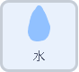
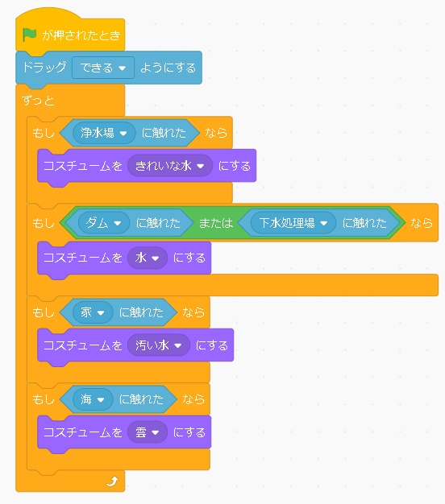

生活水の循環


水が私たちの下に届くまで、どの場所でどういう状態なのかを表現するプログラムです！ 水をドラッグしていろいろな場所のところに持っていくと、水の色が変わります。すこし長いですが、簡単なプログラムです。今回は、家や下水処理場がこのような並びですが、 実際の水の流れをを背景やスプライトで表現していくようにするのもいいのかなと思います。
プログラムするスプライト |
|
|  |
このプログラムは動かす水以外はプログラムする必要がなく、 とにかくこのスプライト以外の必要なスプライトやコスチュームを用意します。 最初に、実行されたら、この水のスプライトをドラッグできるようにします。 次に、他のスプライトに触れたら、 コスチュームを変え、水の状態を変化させます。 （水のある場所）に触れたなら、 コスチュームを（その場所の水の状態）にする というのを、水の状態の種類分だけ用意します。 また、ダムや下水処理場のように、 場所は違うけれど、水の状態は同じ、という場合は、 ’または’というのをつかい、まとめてしまいます。 |